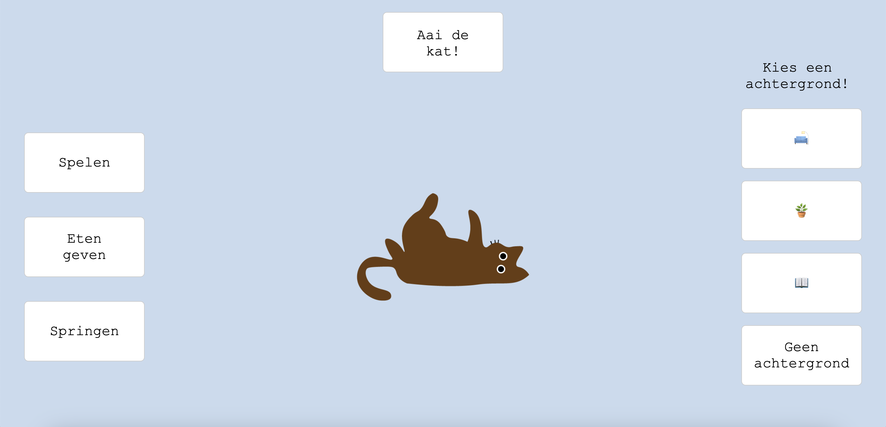

KittyAdventures
Van alle opdrachten die ik tot nu toe heb gemaakt tijdens de opleiding, was dit mijn favoriet. Dit was de eerste keer dat ik heb gewerkt met Javascript. Ik vond het eerst best lastig omdat het een nieuwe codeertaal was.
De opdracht was om een tamagotchi te maken met behulp van Javascript. Ik wilde graag iets met een kat doen, vandaar: KittyAdventures! Je kan je kat eten geven, aaien en er mee spelen. Ook kan je verschillende achtergronden instellen voor de kat. Ook was het belangrijk dat je begreep wat de code inhield en dat je het kon uitleggen. Dit lukte mij tijdens de eerste poging niet genoeg, dus moest ik het herkansen. Uitendelijk ben ik blij dat ik het heb herkanst, omddat ik de code beter begreep en had een eindresultaat waar ik trots op ben. Deze opdracht heeft mij uitgedaagd om te experimenteren met nieuwe dingen en onderzoek te doen naar hoe de codetaal werkt.
Voor een kijkje in de code heb ik hier de link naar mijn Github repository. Neem gerust een kijkje.
De link naar de website zelf KittyAdventures
